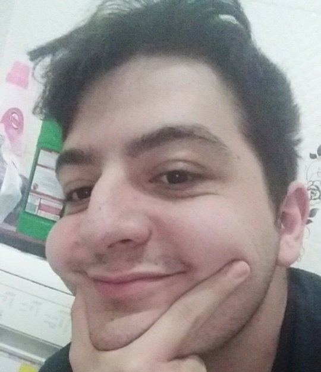
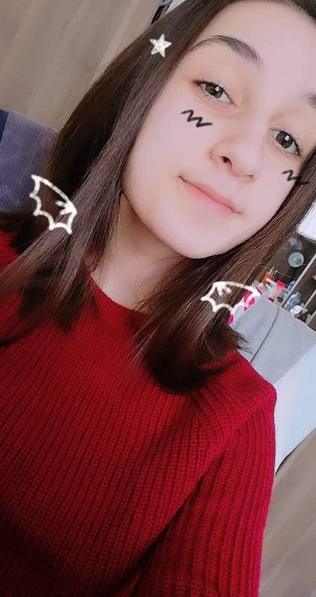
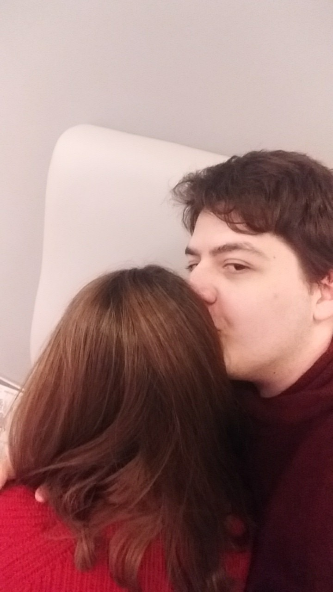

Mustafa Uğur Erkan Saygılar ile sunar!
-Gerizekalı Ben-

Gerizekalı Ben!!!11 06/01/2019
-
İvit! Fotoğrafta gördüğün üzere bu salakla çıkıyorsun ve neredeyse 3 yıl oldu! Kesin her gün bu tipe bakarak diyorsundur ki--- Allahım neydi günahım bu malla çıktım?
Aslında bakarsan seni suçlamıyorum--- Bende olsam kesin benle çıkmazdım-- Dengesiz, komik bile olmayan şüşko ve sıkıcı biri. Ama benle çıktın! Bu bana yeterde artardı bile. Varlığın beni güldürmeye yetiyor biliyor muydun?
Biliyorum böyle büyük denli çirkin biri yetmiyor gibi huysuz yaşlı bir bunakla çıkıyor hissiyatı veriyorum sana. Kıskanıyorum homurdanıyorum! Yakında beni hemşirenin eline versen şaşmam! Ama bu tipte ve bu huysuzlukla bile olsam.. Sana demek istediğim birkaç şey var!
SENİ SEVİYORUM BEBEK!! ---- Tabii-- çok aptalca kaçtı ama.. yani her bağımdan neredeyse. Bu benimle ilgili sekme biliyorum ama.. Demeden diyemiyorum, hayatımın en büyük parçası oldun benim için. Kendimden bahsediyorsam, yanıma seni yakıştırıyorum hemen! Benim en büyük yeteneğim, o bu umrumda değil! Hayatımda sen varken, her şey daha kolay oluyor..
Tabii bu yazıyı okurken aklından iki şey geçecek- Birincisi şu! Allahın beyinsizi seni seviyorum diyip kutlamak bu kadar mı zordu? ikincisi ise Türkçe hocanı sikeyim bu kadar virgül mü kullanılır? ama ikisine de cevabım ben kocaman bir embesililim ve ağızımdan büyük laflar çıkmıyor!
Öhm öhm.. Şimdi asıl sonraki sayfaya geçelim! SANA!!
-Muhteşem Sen!-

Muhteşem Sen!!!1 16/09
-
Allahım senle ilgili nereden başlayabilirim ki? Güzellik desen var.. Yetenek desen var? Ne ararsan var! BAYILIYORUM SANA BEN ALLAHIM
Ama bir yerden başlamak gerekir değil mi? Ben de buradan başlayacağım! En baştan-- Senle ilgili nelere bayıldığımı teker teker yazacağım>>!
Senle tanıştığımdan beri kendine hakim bir kızsın. Netsin, belirli görüşlerin var! İnançların, tecrübelerin ve bunun yanı sıra bununla gelen hayli mi hayli hoşnut ama bir o kadar sert kişilik!
Arkadaşların arasında o kadar hoşsun ki! Senle arkadaş olmamak için kimseyi sevmemek gerek? Arkadaşlarını savunma tarzın, onlara ilgin ve düşüncen? Herkesin sahip olmak istediği ablası gibisin, ama yaşın bir tık daha küçük onun için hehe.
Ama ben sende herkesten daha farklı bir şey aldım demek ki, senden hoşlandım ya? Veya-- Diğer kızlaradan hep ayrı kaldın benim gözümde. Benim düşüncem iseee...
Senin zekana aşıktım! Bilsen bile alçak gönüllü oluşuna, hiçbir zaman birini ezmeden destek oluşuna. Zamanında, arkadaşken sadece senin fikirlerin benim için önem taşırdı, çünkü zekiydin. Ne dediğinin farkınadydın, hala farkındasın ve hala bu konuda aşırı zekisin!
Güzeldin. Oohoho! Hele ki, birkaç tane fotoğrafını görünce şey diyordum. "Allahım kız zayıf, güzel ve uzun. Yetmiyor gibi zeki bir de, gitarda çalıyor? Milyoner olmayı dilesem daha erken gerçek olur ha." diyordum! Ahaha-- Başka bir şey dilesem gerçek olurmuş değil mi? Ama aslında biliyor musun? Tekrar bir dilek hakkım olsa! Yine seni dilerdim.
Beni herkesten daha özel hissetirdin hayatımda, gördüğüm hiçbir kişi gibi değildin veya davranışların hiçbiri gibi değildi. Kalbimi çok kötü çaldın benden biliyor musun? Olduğuuz seneler içinde bile senden ayrılma düşüncelerini kaldıramıyordum. Düşünemiyorum, sensiz artık ne yaparım? Çünkü dünyam oldun, evrenim oldun bu sıkıştığım yerde. Rüyalarımın sahibi oldun, ilgimin kalbimin ve nicelerinin. Her şeyi sadece iki çift lafınla kaptın biliyor musun? Seni seviyorum diyerek.
Ama dilerdim daha iyi bir erkek arkadaşı olabileyim sana. Saydıklarım kadar, hoş ve ilgili belki de daha zeki olabilmek isterdim! Ne uzunum, ne fiziğim var. Zeka desen bende ne gezer? Bilgisayar olmadıkça, bir sik bildiğim yok. Tuhaf ve zor bir kişiliğim var.. Ben bile neyin ne olduğu hakkında fikrim yok. Benim kadar zor birini sevmek, çok zor. Ama ne kadar mal da olsamda sana layık bir sevgili olmak için her şeyi deniyorum.
Bilmeni istiyorum ki.. Seni bu hayattaki her şeyden fazla seviyorum. Kendimle ilgili en net bildiğim şey, kalbimin sensiz olamayacağı. Abartmadan, gerçekten. O kadar bağlandım ki sana ben..? Sanki kapı kolu gibiyim. Sende kapı! Elbet bizi sökerlerse, yine bir işlevim olur. Ama sensiz olmaz ya?
Allahım bu kadar cümleden sonra aptal aptal örnekler veriyorum. Ama bu yazının tamamen ne düşünüyorsam o olsun istiyorum. Düzenleme olmadan, en gereksiz düşüncelerim ile ilgili bile olsa. Çünkü bunları ağızla söyleyemecek kadar inatçı ve utangacım.
Tabii, aynı utangaçlık keşke azıcık sapık olunca da çıksa.
AMA AMA!!
Buraya senin ne kadar mükemmel olduğunu sığdıramam! Sığdırmak istesem de büyük ihtimalle sherlock holmes'un kitap serisini okur gibi teker teker açıp okursun. YILDÖNÜMÜZÜ BUNUNLA BİTİREMEM!
Sana yazdığım yazılar!

Sana yazdığım yazılar!
-
Biliyor musun? Benim için yağmur gibisin.
Islanmak hoşuma gidiyor yağmur altında..
O soğuk taneleri, üşütmüyor beni. Tam tersine, mutlu ediyor gülümsetiyor.
Ne derdim varsa yok oluyor altında. Yorgunluğumu alıyor, gülümsetiyor birazda.
O ıslak kokusunu içime çekince, gevşiyorum işte. Hayat bu diyorum.
Aynı yağmur gibisin benim için.
Yanında olmak hoşuma gidiyor, sesinle yatışıyorum. Nazik tenine dokunmak utandırıyor beni, ama bir o kadar da mutlu ediyor. İçim ısınıyor..
Ne derdim varsa yok oluyor yanında. Yorgunluğumu alıyorsunn, gülümsetiyorsun beni.
O kokunu içime çekince, gevşiyorum işte. Diyorum ki, aradığım hayat bu.
-
Kaç yıl oldu aşkım? Neredeyse üç değil mi? Çok kırdım seni, belki de mutlu ettim o sırada. Kim bilir? Tabii ki en iyi sen.
Aslında ne olursa olsun kırmak değildi amacım seni.. nede üzmek. Tek güldürmek istedim seni, aşkınla gurur duy istedim. Benle gurur duy istedim.. Sevgilin olduğum için çekin değil.
Hepte benle gurur duydun, en ufacık şey için bile olsa. Ailen bile beni biliyor neredeyse, 'bilgisayarcı çocuk' bile olsam senin için bambaşka olduğumu biliyorum!
Kalbimin en güzel kısımları senin bebeğim, hatta hepsi senin. Çokta güzel bir kalp değil ama.. Senin ellerinde şekil alıyor. Bir kadın eli değmiş gibi, temizleniyor ve güzelleşiyor. Hemde senin elinde.. Hayat daha ne kadar güzel olabilir ki?
Olmadı senle olduğumdan beri mutsuz olduğum bir gün. Olsa bile benim mallığımdır elbet, güldürdün beni her gün. Öptün beni sevdin, öpmeme izin verdin. Yalanlar söyledin ailene gelmek için, ama beni görmeye geldin! Sarıldın bana, en güzel sarılmanla. Sevdin beni, en güzel sevginle.
Ve beni en mutlu adam yaptın, kim bilir adam yaptın? Senle şekil aldım iyice, senle mutlu oldum bu hayatta. Ama bilmeni istediğim o kadar şey var ki! Hepsini göstereceğim, dördüncü yılımızla!
------------------------------------------------------------------
Son Olarak!

Son olarak! -2021-
-
Burası ise, sana en son demek istediğim şeyler ilge ilgili yer. Ne düşünüyorum ne istiyorum ve ne görüyorum!
Çok güzel bir yıl geçirdik, iyisi ile kötüsü ile de. Bu yazıyı Ocak 2'de yazıyorum! Yani-- Yazıyı sana atmama 5 günden az var! Umarım bu yazıyı ve tabii bu salak projeyi beğenmişsindir!
Tabii-- O kadar güzel oldu mu bilemem ama.. Hazırlarken cidden aşkımı dökmeye çalıştım buraya! Bu websitesini okuduktan sonra aslında sana başka planlarım daha var. Tabii bir aksilik çıkıp sana siteyi atamazsam orası ayrıPDASKD. DAHA TELEFON VERSİYONUNU YAZAMADIM ÇOK ÜZÜLÜRÜM ATAMAZSAM SANA ZAMANINDA!
Ama bilmeni istiyorum ki- Seni gerçekten çok seviyorum. Çoooooook hemde çooooooooooooooooooooooooooooook fazla. Burayı daha fazla 'o' ile doldurmadan demek istediğim iyi ki benimle çıkıyorsun ve iyi ki beni seviyorsun bebek!
Ne istiyorum biliyor musun? Çok basit! Senle hep böyle olmak. Sana evlenme teklifi eden adam olmak, senin hayal ettiğin evi sana sağlayan adam olmak. Daha da iyisi, daha çocuk sevmeyi beceremezken çocuk sahibi olacağın adam olmak! Tabii sınırlarımı aşıyorum ama senin sözünğü söyleyim! EĞER 5 SENEDEN FAZLA KALIRSAK SEVGİLİ KESİN EVLENİRİM! -Elif 2018.
Gördüğüm şey ise çok basit. Sadece sen bebeğim, gözüm sadece seni görüyor. Seni gördükçe de, eminim ki sorunsuz görmeye devam edecekler! Seni seviyorum, nice yeni yıllara! *UMARIM ASKERE GİTMEMİŞİMDİR ATMADAN* Veee.. Seni seviyorum her şeyin sonu olarak.